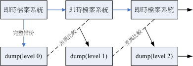

某些时刻你想要针对文件系统进行备份或者是储存的功能时，不能不谈到这个 dump 命令！
这玩意儿我们曾在前一章的 /etc/fstab 里面稍微谈过。
其实这个命令除了能够针对整个 filesystem 备份之外，也能够仅针对目录来备份喔！
底下就让我们来谈一谈这个命令的用法吧！
 dump
dump
其实 dump 的功能颇强，他除了可以备份整个文件系统之外，还可以制定等级喔！什么意思啊！
假设你的 /home 是独立的一个文件系统，那你第一次进行过 dump 后，再进行第二次 dump 时，
你可以指定不同的备份等级，假如指定等级为 1 时，此时新备份的数据只会记录与第一次备份所有差异的文件而已。
看不懂吗？没关系！我们用一张简图来说明。

图 4.1.1、dump 运行的等级 (level)
如上图所示，上方的『即时文件系统』是一直随著时间而变化的数据，例如在 /home 里面的文件数据会一直变化一样。
而底下的方块则是 dump 备份起来的数据，第一次备份时使用的是 level 0 ，这个等级也是完整的备份啦！
等到第二次备份时，即时文件系统内的数据已经与 level 0 不一样了，而 level 1 仅只是比较目前的文件系统与 level 0
之间的差异后，备份有变化过的文件而已。至於 level 2 则是与 level 1 进行比较啦！这样了解呼？
虽然 dump 支持整个文件系统或者是单一各别目录，但是对於目录的支持是比较不足的，这也是 dump 的限制所在。
简单的说，如果想要备份的数据如下时，则有不同的限制情况：
- 当待备份的数据为单一文件系统：
如果是单一文件系统 (filesystem) ，那么该文件系统可以使用完整的 dump 功能，包括利用 0~9 的数个 level 来备份，
同时，备份时可以使用挂载点或者是装置档名 (例如 /dev/sda5 之类的装置档名) 来进行备份！
- 待备份的数据只是目录，并非单一文件系统：
例如你仅想要备份 /home/someone/ ，但是该目录并非独立的文件系统时。此时备份就有限制啦！包括：
- 所有的备份数据都必须要在该目录 (本例为：/home/someone/) 底下；
- 且仅能使用 level 0 ，亦即仅支持完整备份而已；
- 不支持 -u 选项，亦即无法创建 /etc/dumpdates 这个各别 level 备份的时间记录档；
dump 的选项虽然非常的繁复，不过如果只是想要简单的操作时，您只要记得底下的几个选项就很够用了！
[root@www ~]# dump [-Suvj] [-level] [-f 备份档] 待备份数据
[root@www ~]# dump -W
选项与参数：
-S ：仅列出后面的待备份数据需要多少磁碟空间才能够备份完毕；
-u ：将这次 dump 的时间记录到 /etc/dumpdates 文件中；
-v ：将 dump 的文件过程显示出来；
-j ：加入 bzip2 的支持！将数据进行压缩，默认 bzip2 压缩等级为 2
-level：就是我们谈到的等级，从 -0 ~ -9 共十个等级；
-f ：有点类似 tar 啦！后面接产生的文件，亦可接例如 /dev/st0 装置档名等
-W ：列出在 /etc/fstab 里面的具有 dump 配置的 partition 是否有备份过？
|
现在就让我们来做几个范例吧！假如你要将系统的最小的文件系统捉出来进行备份，那该如何进行呢？
# 1. 先找出系统中最小的那个文件系统，如下所示：
[root@www ~]# df -h
Filesystem Size Used Avail Use% Mounted on
/dev/hdc2 9.5G 3.7G 5.3G 42% /
/dev/hdc3 4.8G 651M 3.9G 15% /home
/dev/hdc1 99M 11M 83M 12% /boot <==看起来最小的就是他啦！
tmpfs 363M 0 363M 0% /dev/shm
# 2. 先测试一下，如果要备份此文件系统，需多少容量？
[root@www ~]# dump -S /dev/hdc1
5630976 <==注意一下，这个单位是 bytes ，所以差不多是 5.6MBytes。
# 3. 将完整备份的档名记录成为 /root/boot.dump ，同时升级记录档：
[root@www ~]# dump -0u -f /root/boot.dump /boot
DUMP: Date of this level 0 dump: Tue Dec 2 02:53:45 2008 <==记录等级与备份时间
DUMP: Dumping /dev/hdc1 (/boot) to /root/boot.dump <==dump的来源与目标
DUMP: Label: /boot <==文件系统的 label
DUMP: Writing 10 Kilobyte records
DUMP: mapping (Pass I) [regular files] <==开始进行文件对应
DUMP: mapping (Pass II) [directories]
DUMP: estimated 5499 blocks. <==评估整体block数量
DUMP: Volume 1 started with block 1 at: Tue Dec 2 02:53:46 2008
DUMP: dumping (Pass III) [directories] <==开始 dump 工作
DUMP: dumping (Pass IV) [regular files]
DUMP: Closing /root/boot.dump <==结束写入备份档
DUMP: Volume 1 completed at: Tue Dec 2 02:53:47 2008
DUMP: Volume 1 5550 blocks (5.42MB) <==最终备份数据容量
DUMP: Volume 1 took 0:00:01
DUMP: Volume 1 transfer rate: 5550 kB/s
DUMP: 5550 blocks (5.42MB) on 1 volume(s)
DUMP: finished in 1 seconds, throughput 5550 kBytes/sec
DUMP: Date of this level 0 dump: Tue Dec 2 02:53:45 2008
DUMP: Date this dump completed: Tue Dec 2 02:53:47 2008
DUMP: Average transfer rate: 5550 kB/s
DUMP: DUMP IS DONE
# 在命令的下达方面，dump 后面接 /boot 或 /dev/hdc1 都可以的！
# 而运行 dump 的过程中会出现如上的一些信息，您可以自行仔细的观察！
[root@www ~]# ll /root/boot.dump /etc/dumpdates
-rw-rw-r-- 1 root disk 43 Dec 2 02:53 /etc/dumpdates
-rw-r--r-- 1 root root 5683200 Dec 2 02:53 /root/boot.dump
# 由於加上 -u 的选项，因此 /etc/dumpdates 该文件的内容会被升级！注意，
# 这个文件仅有在 dump 完整的文件系统时才有支持主动升级的功能。
# 4. 观察一下系统主动创建的记录档：
[root@www ~]# cat /etc/dumpdates
/dev/hdc1 0 Tue Dec 2 02:53:47 2008 +0800
[文件系统] [等级] [ ctime 的时间 ]
|
这样很简单的就创建起来 /root/boot.dump 文件，该文件将整个 /boot/ 文件系统都备份下来了！
并且将备份的时间写入 /etc/dumpdates 文件中，准备让下次备份时可以作为一个参考依据。
现在让我们来进行一个测试，检查看看能否真的创建 level 1 的备份呢？
# 0. 看一下有没有任何文件系统被 dump 过的数据？
[root@www ~]# dump -W
Last dump(s) done (Dump '>' file systems):
> /dev/hdc2 ( /) Last dump: never
> /dev/hdc3 ( /home) Last dump: never
/dev/hdc1 ( /boot) Last dump: Level 0, Date Tue Dec 2 02:53:47 2008
# 如上列的结果，该结果会捉出 /etc/fstab 里面第五栏位配置有需要 dump 的
# partition，然后与 /etc/dumpdates 进行比对，可以得到上面的结果啦！
# 尤其是第三行，可以显示我们曾经对 /dev/hdc1 进行过 dump 的备份动作喔！
# 1. 先恶搞一下，创建一个大约 10 MB 的文件在 /boot 内：
[root@www ~]# dd if=/dev/zero of=/boot/testing.img bs=1M count=10
10+0 records in
10+0 records out
10485760 bytes (10 MB) copied, 0.166128 seconds, 63.1 MB/s
# 2. 开始创建差异备份档，此时我们使用 level 1 吧：
[root@www ~]# dump -1u -f /root/boot.dump.1 /boot
....(中间省略)....
[root@www ~]# ll /root/boot*
-rw-r--r-- 1 root root 5683200 Dec 2 02:53 /root/boot.dump
-rw-r--r-- 1 root root 10547200 Dec 2 02:56 /root/boot.dump.1
# 看看文件大小，岂不是就是刚刚我们所创建的那个大文件的容量吗？ ^_^
# 3. 最后再看一下是否有记录 level 1 备份的时间点呢？
[root@www ~]# dump -W
Last dump(s) done (Dump '>' file systems):
> /dev/hdc2 ( /) Last dump: never
> /dev/hdc3 ( /home) Last dump: never
> /dev/hdc1 ( /boot) Last dump: Level 1, Date Tue Dec 2 02:56:33 2008
....(中间省略)....
|
透过这个简单的方式，我们就能够仅备份差异文件的部分罗！底下再来看看针对单一目录的 dump 用途！
现在让我们来处理一下 /etc 的 dump 备份吧！因为 /etc 并非单一文件系统，他只是个目录而已。
所以依据限制的说明， -u, level 1~9 都是不适用的。我们只能够使用 level 0 的完整备份将 /etc 给他 dump
下来。因此作法就变的很简单了！
# 让我们将 /etc 整个目录透过 dump 进行备份，且含压缩功能
[root@www ~]# dump -0j -f /root/etc.dump.bz2 /etc
DUMP: Date of this level 0 dump: Tue Dec 2 12:08:22 2008
DUMP: Dumping /dev/hdc2 (/ (dir etc)) to /root/etc.dump.bz2
DUMP: Label: /1
DUMP: Writing 10 Kilobyte records
DUMP: Compressing output at compression level 2 (bzlib)
DUMP: mapping (Pass I) [regular files]
DUMP: mapping (Pass II) [directories]
DUMP: estimated 115343 blocks.
DUMP: Volume 1 started with block 1 at: Tue Dec 2 12:08:23 2008
DUMP: dumping (Pass III) [directories]
DUMP: dumping (Pass IV) [regular files]
DUMP: Closing /root/etc.dump.bz2
DUMP: Volume 1 completed at: Tue Dec 2 12:09:49 2008
DUMP: Volume 1 took 0:01:26
DUMP: Volume 1 transfer rate: 218 kB/s
DUMP: Volume 1 124680kB uncompressed, 18752kB compressed, 6.649:1
DUMP: 124680 blocks (121.76MB) on 1 volume(s)
DUMP: finished in 86 seconds, throughput 1449 kBytes/sec
DUMP: Date of this level 0 dump: Tue Dec 2 12:08:22 2008
DUMP: Date this dump completed: Tue Dec 2 12:09:49 2008
DUMP: Average transfer rate: 218 kB/s
DUMP: Wrote 124680kB uncompressed, 18752kB compressed, 6.649:1
DUMP: DUMP IS DONE
# 上面特殊字体的部分显示：原本有 124680kb 的容量，被压缩成为 18752kb，
# 整个压缩比为 6.649:1 ，还可以的压缩情况啦！
|
一般来说 dump 不会使用包含压缩的功能，不过如果你想要将备份的空间降低的话，那个 -j 的选项是可以使用的。
加上 -j 之后你的 dump 成果会使用较少的硬盘容量啦！如上述的情况来看，文件容量由原本的 128MB 左右下滑到
18MB 左右，当然可以节省备份空间罗！
restore
备份档就是在急用时可以回复系统的重要数据，所以有备份当然就得要学学如何复原了！
dump 的复原使用的是 restore 这个命令！这个命令的选项也非常的多～您可以自行 man restore 瞧瞧！
鸟哥在这里仅作个简单的介绍罗！
[root@www ~]# restore -t [-f dumpfile] [-h] <==用来察看 dump 档
[root@www ~]# restore -C [-f dumpfile] [-D 挂载点] <==比较dump与实际文件
[root@www ~]# restore -i [-f dumpfile] <==进入互动模式
[root@www ~]# restore -r [-f dumpfile] <==还原整个文件系统
选项与参数：
相关的各种模式，各种模式无法混用喔！例如不可以写 -tC 啦！
-t ：此模式用在察看 dump 起来的备份档中含有什么重要数据！类似 tar -t 功能；
-C ：此模式可以将 dump 内的数据拿出来跟实际的文件系统做比较，
最终会列出『在 dump 文件内有记录的，且目前文件系统不一样』的文件；
-i ：进入互动模式，可以仅还原部分文件，用在 dump 目录时的还原！
-r ：将整个 filesystem 还原的一种模式，用在还原针对文件系统的 dump 备份；
其他较常用到的选项功能：
-h ：察看完整备份数据中的 inode 与文件系统 label 等资讯
-f ：后面就接你要处理的那个 dump 文件罗！
-D ：与 -C 进行搭配，可以查出后面接的挂载点与 dump 内有不同的文件！
|
- 用 restore 观察 dump 后的备份数据内容
要找出 dump 的内容就使用 restore -t 来查阅即可！例如我们将 boot.dump 的文件内容捉出来看看！
[root@www ~]# restore -t -f /root/boot.dump
Dump date: Tue Dec 2 02:53:45 2008 <==说明备份的日期
Dumped from: the epoch
Level 0 dump of /boot on www.vbird.tsai:/dev/hdc1 <==说明 level 状态
Label: /boot <==说明该 filesystem 的表头！
2 .
11 ./lost+found
2009 ./grub
2011 ./grub/grub.conf
....底下省略....
[root@www ~]# restore -t -f /root/etc.dump
Dump tape is compressed. <==加注说明数据有压缩
Dump date: Tue Dec 2 12:08:22 2008
Dumped from: the epoch
Level 0 dump of / (dir etc) on www.vbird.tsai:/dev/hdc2 <==是目录！
Label: /1
2 .
1912545 ./etc
1912549 ./etc/rpm
1912550 ./etc/rpm/platform
....底下省略....
|
这个查阅的数据其实显示出的是档名与原始文件的 inode 状态，所以我们可以说， dump 会参考 inode 的记录哩！
透过这个查询我们也能知道 dump 的内容为何呢！再来查一查如何还原吧！
为什么 dump 可以进行累积备份呢？就是因为他具有可以查询文件系统与备份文件之间的差异，
并且将分析到的差异数据进行备份的缘故。所以我们先来看看，如何查询有变动过的资讯呢？你可以使用如下的方法检验：
# 0. 先尝试变更文件系统的内容：
[root@www ~]# cd /boot
[root@www boot]# mv config-2.6.18-128.el5 config-2.6.18-128.el5-back
# 1. 看使进行文件系统与备份文件之间的差异！
[root@www boot]# restore -C -f /root/boot.dump
Dump date: Tue Dec 2 02:53:45 2008
Dumped from: the epoch
Level 0 dump of /boot on www.vbird.tsai:/dev/hdc1
Label: /boot
filesys = /boot
restore: unable to stat ./config-2.6.18-128.el5: No such file or directory
Some files were modified! 1 compare errors
# 看到上面的特殊字体了吧！那就是有差异的部分！总共有一个文件被变更！
# 我们刚刚确实有更动过该文件，嘿嘿！这样是否能了解？！
# 2. 将文件系统改回来啊！
[root@www boot]# mv config-2.6.18-128.el5-back config-2.6.18-128.el5
[root@www boot]# cd /root
|
如同上面的动作，透过曾经备份过的资讯，也可以找到与目前实际文件系统中有差异的数据呢！
如果你不想要进行累积备份，但也能透过这个动作找出最近这一阵子有变动过的文件说！了解乎？
那如何还原呢？由於 dump 是记录整个文件系统的，因此还原时你也应该要给予一个全新的文件系统才行。
因此底下我们先创建一个文件系统，然后再来还原吧！
# 1. 先创建一个新的 partition 来使用，假设我们需要的是 150M 的容量
[root@www ~]# fdisk /dev/hdc
Command (m for help): n
First cylinder (2335-5005, default 2335): <==这里按 Enter
Using default value 2335
Last cylinder or +size or +sizeM or +sizeK (2335-5005, default 5005): +150M
Command (m for help): p
....中间省略....
/dev/hdc8 2335 2353 152586 83 Linux
Command (m for help): w
[root@www ~]# partprobe <==很重要的动作！别忘记！
# 这样就能够创建一个 /dev/hdc8 的 partition ，然后继续格式化吧！
[root@www ~]# mkfs -t ext3 /dev/hdc8
[root@www ~]# mount /dev/hdc8 /mnt
# 2. 开始进行还原的动作！请您务必到新文件系统的挂载点底下去！
[root@www ~]# cd /mnt
[root@www mnt]# restore -r -f /root/boot.dump
restore: ./lost+found: File exists
|
由於我们是备份整个文件系统，因此你也可以建置一个全新的文件系统 (partition) 来进行还原的动作！
整个还原的动作也不难，如上表最后一个命令，就是将备份文件中的数据还原到本目录下。
你必须要变更目录到挂载点所在的那个目录才行啊！这样还原的文件才不会跑错地方！如果你还想要将 level 1 的
/root/boot.dump.1 那个文件的内容也还原的话，那就继续使用『restore -r -f /root/boot.dump.1』去还原吧！
某些时候你只是要将备份档的某个内容捉出来而已，并不想要全部解开，那该如何是好？此时你可以进入 restore
的互动模式 (interactive mode)。在底下我们使用 etc.dump 来进行范例说明。假如你要将 etc.dump
内的 passwd 与 shadow 捉出来而已，该如何进行呢？
[root@www ~]# cd /mnt
[root@www mnt]# restore -i -f /root/etc.dump
restore >
# 此时你就已经进入 restore 的互动模式画面中！要注意的是：
# 你目前已经在 etc.dump 这个文件内了！所有的动作都是在 etc.dump 内！
restore > help
Available commands are:
ls [arg] - list directory <==列出 etc.dump 内的文件或目录
cd arg - change directory <==在 etc.dump 内变更目录
pwd - print current directory <==列出在 etc.dump 内的路径档名
add [arg] - add `arg' to list of files to be extracted
delete [arg] - delete `arg' from list of files to be extracted
extract - extract requested files
# 上面三个命令是重点！各命令的功能为：
# add file ：将 file 加入等一下要解压缩的文件列表中
# delete file ：将 file 移除出解压缩的列表，并非删除 etc.dump 内的文件！别误会！^_^
# extract ：开始将刚刚选择的文件列表解压缩了去！
setmodes - set modes of requested directories
quit - immediately exit program
what - list dump header information
verbose - toggle verbose flag (useful with ``ls'')
prompt - toggle the prompt display
help or `?' - print this list
restore > ls
.:
etc/ <==会显示出在 etc.dump 内主要的目录，因为我们备份 /etc ，所以档名为此！
restore > cd etc <==在 etc.dump 内变换路径到 etc 目录下
restore > pwd <==列出本目录的档名为？
/etc
restore > ls passwd shadow group <==看看，真的有这三个文件喔！
passwd
shadow
group
restore > add passwd shadow group <==加入解压缩列表
restore > delete group <==加错了！将 group 移除解压缩列表
restore > ls passwd shadow group
*passwd <==有要被解压缩的，档名之前会出现 * 的符号呢！
*shadow
group
restore > extract <==开始进行解压缩去！
You have not read any volumes yet. <==这里会询问你需要的volume
Unless you know which volume your file(s) are on you should start
with the last volume and work towards the first.
Specify next volume # (none if no more volumes): 1 <==只有一个 volume
set owner/mode for '.'? [yn] n <==不需要修改权限
restore > quit <==离开 restore 的功能
[root@www ~]# ll -d etc
drwxr-xr-x 2 root root 1024 Dec 15 17:49 etc <==解压缩后，所创建出来的目录啦！
[root@www ~]# ll etc
total 6
-rw-r--r-- 1 root root 1945 Sep 29 02:21 passwd
-r-------- 1 root root 1257 Sep 29 02:21 shadow
|
透过互动式的 restore 功能，可以让你将备份的数据取出一部份，而不必全部都得解压缩才能够取得你想要的文件数据。
而 restore 内的 add 除了可以添加文件外，也能够添加整个备份的『目录』喔！还不错玩吧！
赶紧测试看看先！ ^_^